Fistly, i explore some resources and data
Create a first-try with Openstreetmap Coastline in https://edx.tavenel.fr/coastalerosion/index2.html
I've done a presentation of my works
Define the topic: Interactive Coastal Erosion Map with AI Predictions
I improve my first-try
I've done a first try with Flask project with NASA API based on NASA Earth Imagery API
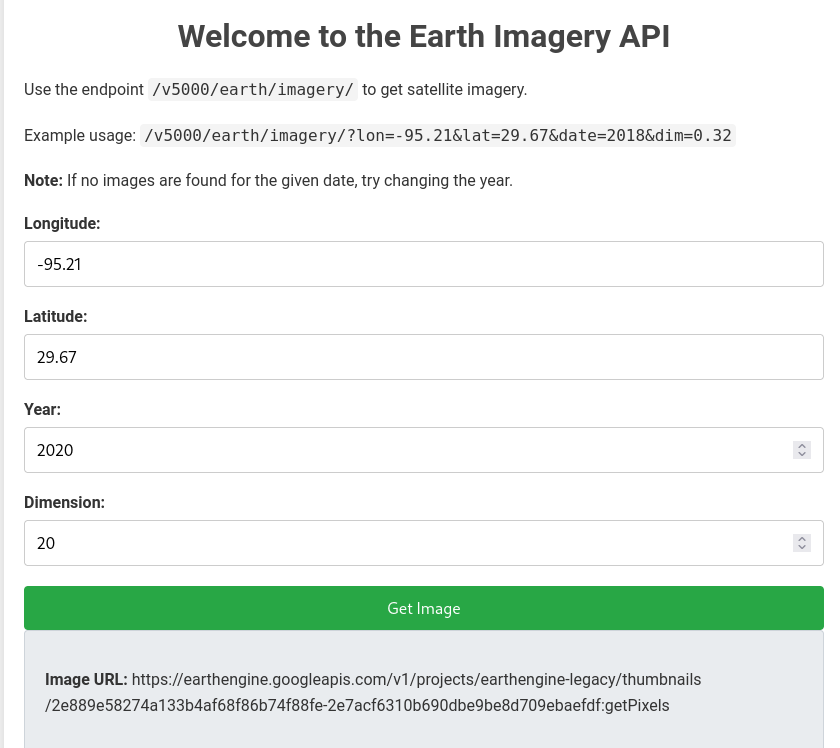 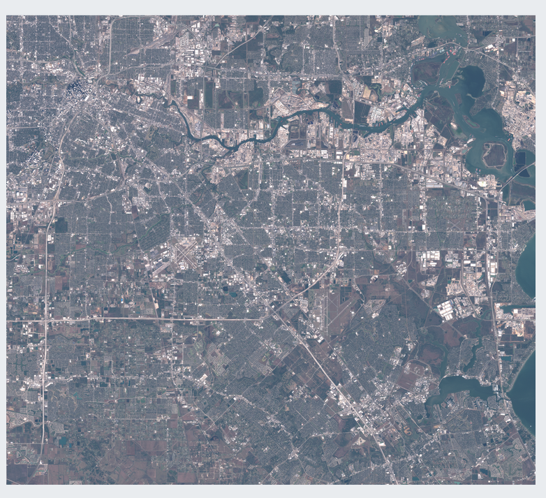Began developing the website https://erosion-ai.tavenel.fr/ to showcase my work at the Coastal Engineering & Ocean Climate (CEOC) center. This includes my research on the Interactive Coastal Erosion Map with AI Predictions topic.
Discover a new tool : https://livingatlas.arcgis.com/wayback/
Correct errors on the tool and made a pull request on an opensource project: https://github.com/Esri/wayback
Create a local implementation of the ESRI | World Imagery Wayback
New prototype idea
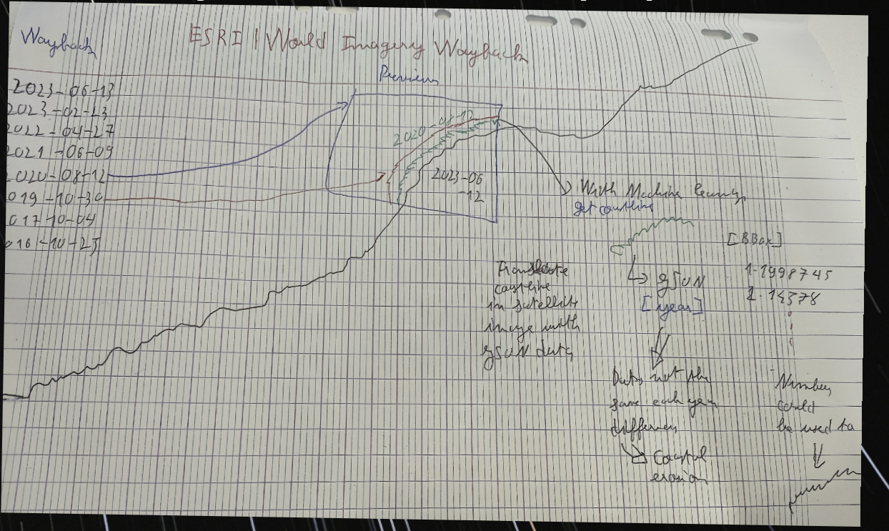The idea is to use World Imagery Wayback to create a custom basemap with ESRI and ArcGIS, and then combine that map with Mapbox.
Using Machine Learning algorithms with historical previews, I could identify the coastline.
With historical coastlines, I could create local animations of coastal erosion.
For example, displaying the coastline in different colors to show the erosion over time, with a 2024 map to illustrate coastal changes.
The data would be stored in JSON format with corresponding years.
But encounter some issues to proceed like that (cannot download pictures)
Find an interesting article https://www.sciencedirect.com/science/article/pii/S0034425722001584
Find a useful database: https://openmldata.ukho.gov.uk/
Fit a model in order to find where the coastline is on a picture
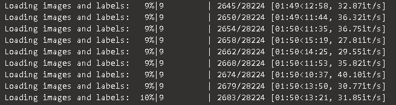 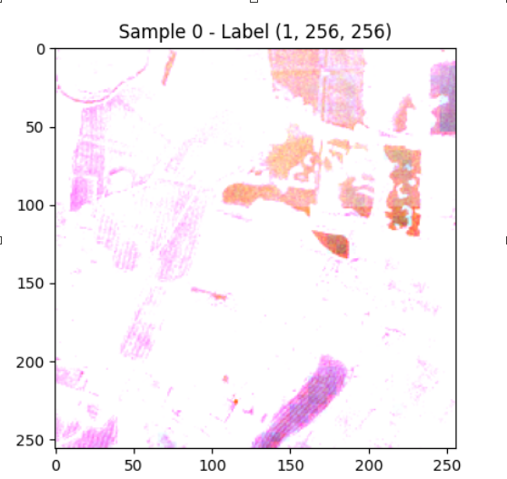 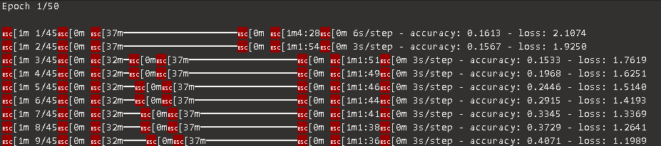You could check the training and validation metrics in this link
Create the github repository with python code in Repository github coastline-ML
Add the coastline openstreetmap project on erosion-ai [Ireland implemented]
Check the coastline image project on erosion-aiAdd the satellite-imagery interface on gitub
Code project on githubTry to give to coastline-ML the following picture
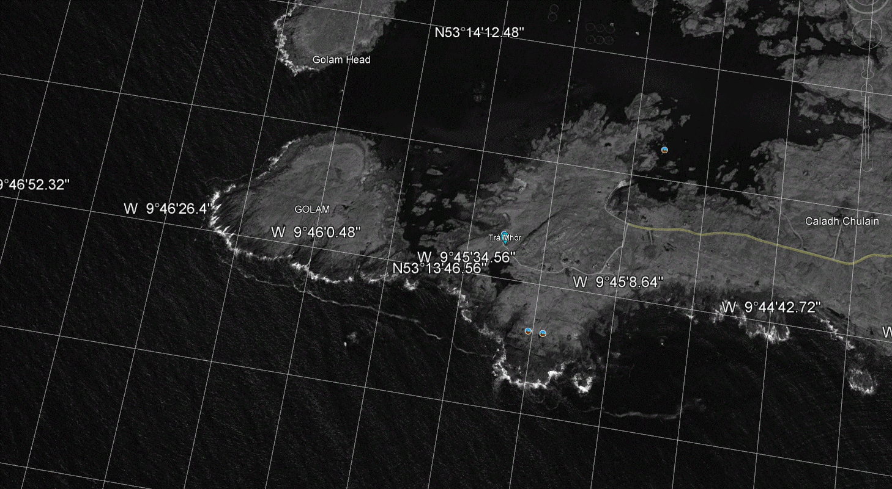And i obtain the following result
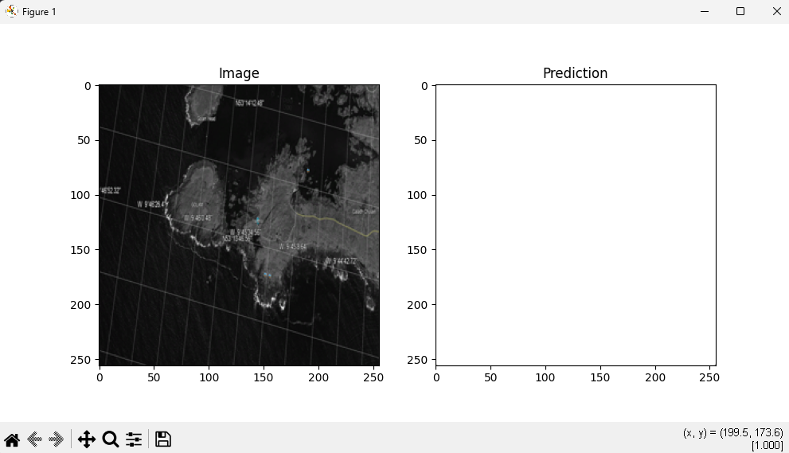And me who just want to obtain the coastline automatically from google earth studio , what could i do?
The coastline-ML needs to have a tif image with a label picture where the coastline is identified in order to generate a coastline prediction
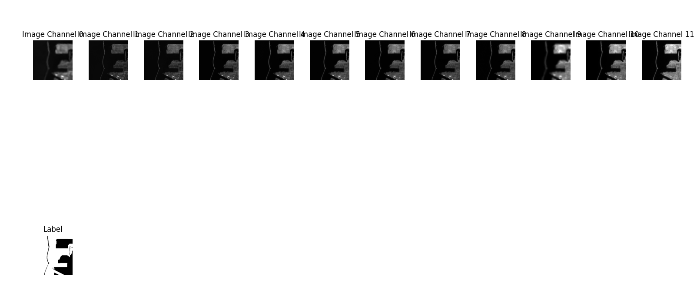So i want to find a way to generate automatically the label picture if i want to use coastline-ML to predict the coastline.
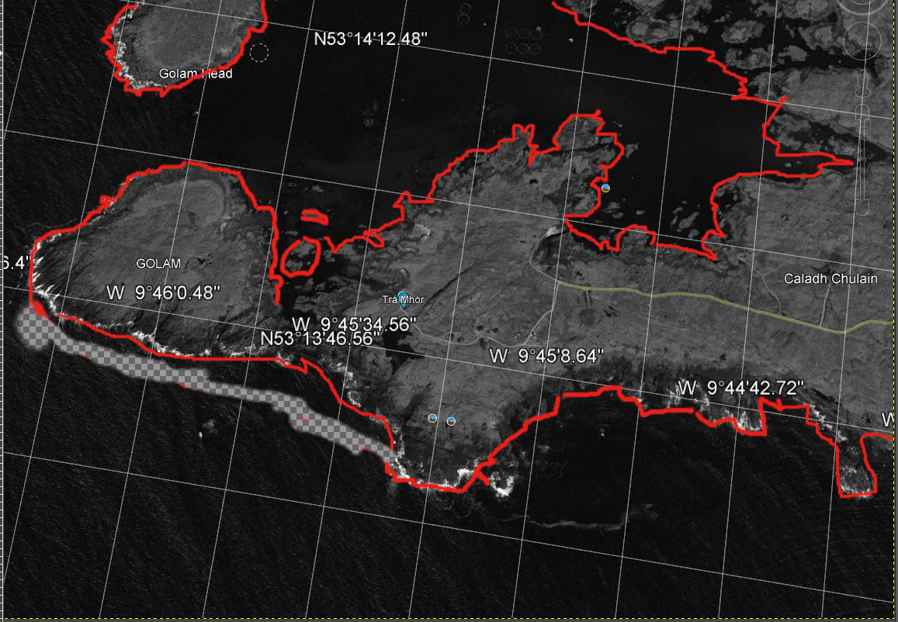In addition i would like to obtain the coastline but with geoJson data like that
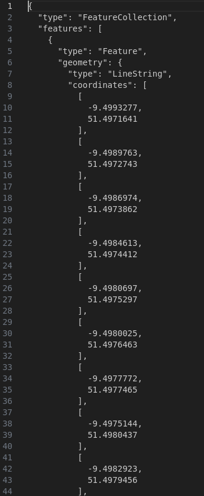Find interesting resources to explore
Interpreting a Semantic Segmentation Model for Coastline Detection interpreting-coastline-unet SWED-edge-detectionTry to implement a Semantic Segmentation Model for Coastline Detection by transform original image to label
Create a new github code project by forking the existing code project https://github.com/conorosully/SWED-edge-detection
Add my work on that project here :click here
Improve the powerpoint presentation
Implement France in the openstreetmap coastline interactive map
Try to train a unet model in order to automatically generate the label image with accuracy apprixmatively 0.46
Check training metrics here!Create the coastal sentinel repository on github
Repository code projectImprove the mapbox appearance for interactive maps
Create the first prototype : Check the first prototype with Dounam bay
I create a word document to write my work for the last two weeks.
Looking for new labelling methods
Implement new models with new labeling methods
Improve the repository CoastalSentinel github project : Check here!
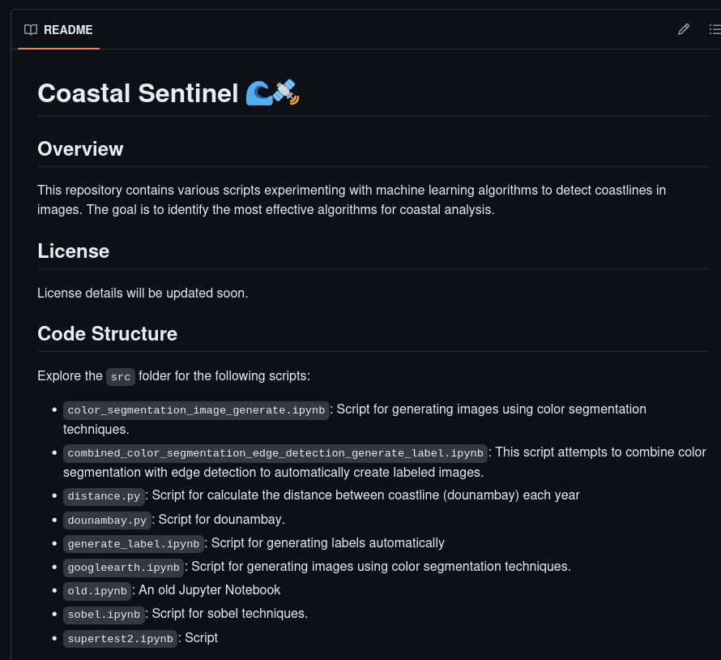I improve the coastal sentinel Jupyter notebook
Prepare the tomorrow presentation
Held a presentation of my works for the 3 weeks to CEOC group online meeting
The pdf presentation file
Prepare a new dataset for classification in Machine Learning to make the difference between mainland and water
Here is the datasetNext, try to combine the classification dataset with an u-net model to make autolabelling for the dataset and find the coastline automatically.
Improve the new dataset (~1000 images)
Implement my code trials and ideas (still chaotic)
Here is the chaotic dataset (Updated), and code, still in progress 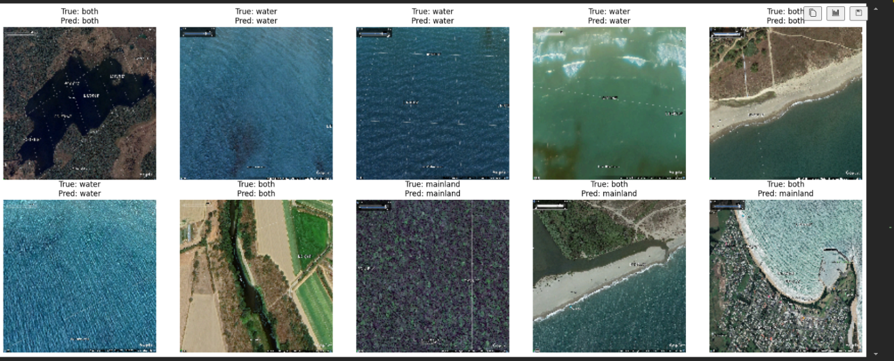Develop the classifcation model algorithm to obtain the difference between mainland and water
Try to implement a manual loss function to guide the classification if very wrong
New presentation
Here is the new slidesMeeting with Hachem Kassem at 11:00
The working in progress presentation
Commit a lot of changes in coastal sentinel
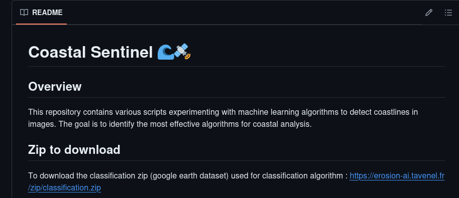Fix bugs in coastsat software
View the issue written hereI was able to start manipulating the software
I created a pull request on coastsat project to solve the issues i encountered
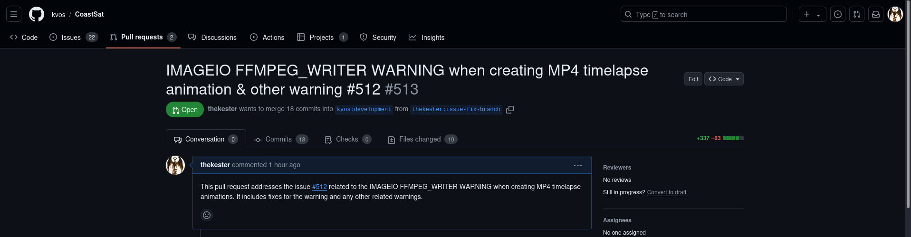Coding the new prototype , work in progress ... (Check here)
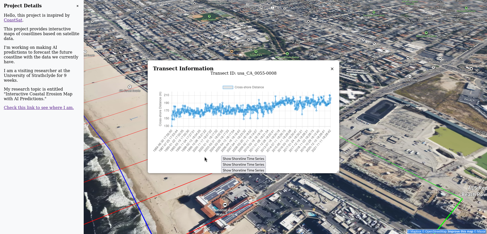Improve the new prototype by adding linear trend and cross shore change
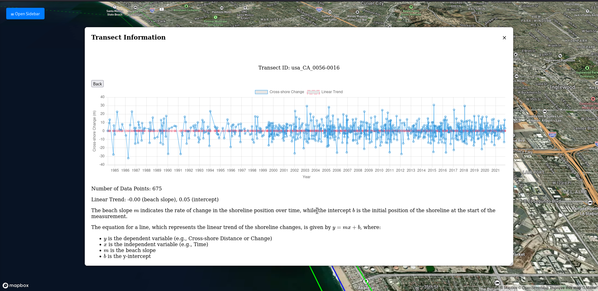Begin to implement Openstreetmap coastline
Improve popup style and add new events on click
Download coastsat datas
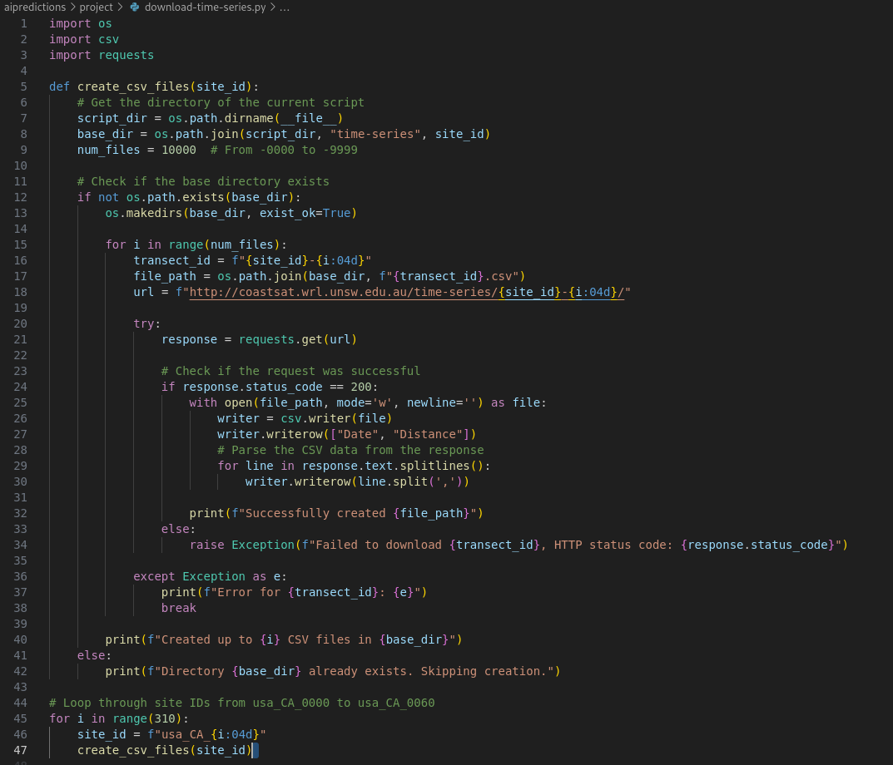Try to manipulate the coastsat software but encounter many issues and bugs
Try to manipulate the coastsat software but encounter many issues and bugs
Slides meeting CEOC 11/07/2024Try to make AI predictions on None values in shoreleins datas but loss on 6*10^22 so still working on progress ...
Prediction modelMake time series forecasting on shore cross datapoints
Combine filled approaches to find values behind None, and apply trend method forecasting to predict the future (up to 2030) .
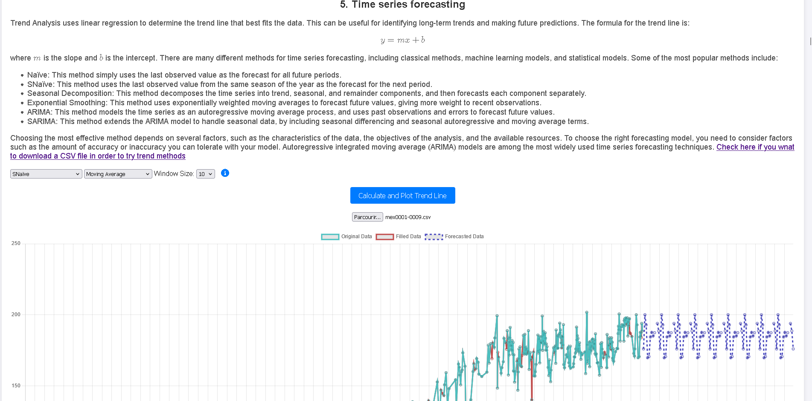Implement methods to predict the past (1970)
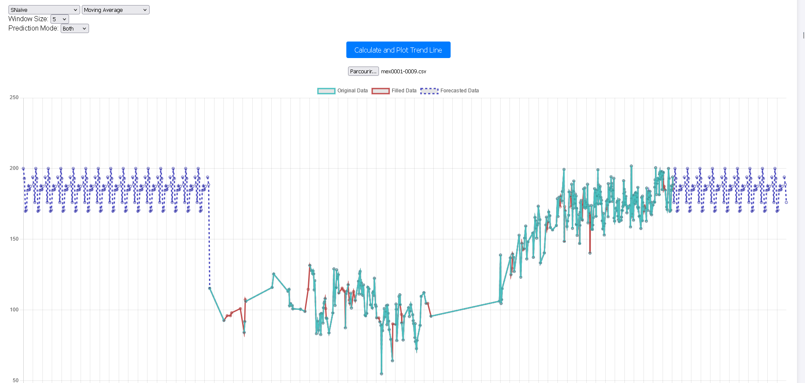Make more realistic times forecasting for holtWintersForecast and seasonalDecompositionForecast
New presentation
Here is the new slidesStart to write a technical paper on my research topic
The technical paperAdd other CSV datas (Mex, Chili) to the map
Succesfully understand coastsat software
I successfully added a popup system with mp4 movies to visualize shoreline animations on a given sitename.
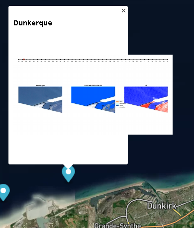Implement comparison mechanism between shoreline images
Improve popup systems (Popup scrollable, header fixed to exit anytime ... )
Succesfully implementing sea level data for Dunkerque: Datas available on https://www.sonel.org/spip.php?page=maregraphe&idStation=1758
Shorelines animations for coastsat are available on markers in France
Implement some station datas in France for sea level
Find two interesting databases for tides and sea level for the United Kingdom: NTSLF and PSMSL
Implement new markers in France coasts based on stations locations in SONEL
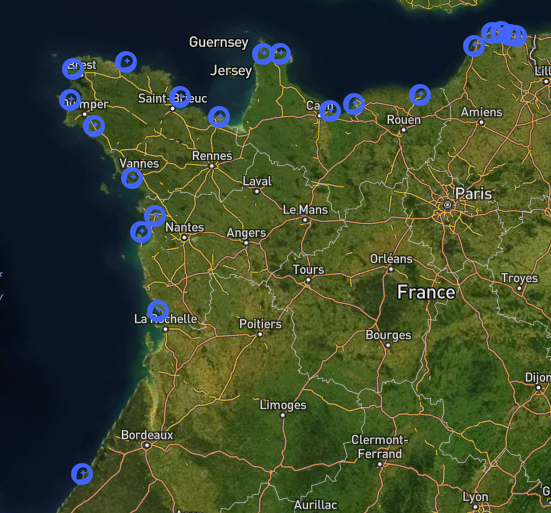Find an interesting post on Linkedin
Improve the technical paper especialy the current state of art of the research topic.
Find an interesting link: Narabeen focus
Add polygons in orange for sites_data.json in the map
Find an interesting github repository: COASTGARD
Continue to improve my technical paper
Correct bugs and improve script to study specific Region Of Interest
Find a useful extension of coastsat : CoastSeg extension of coastsat
Implement times forecasting choices on single transect
Repair time forecasting interactions
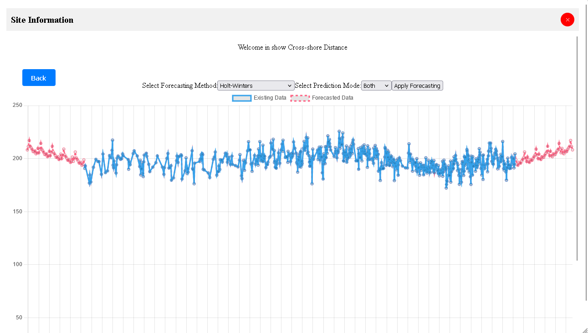Improve message on single transects div study
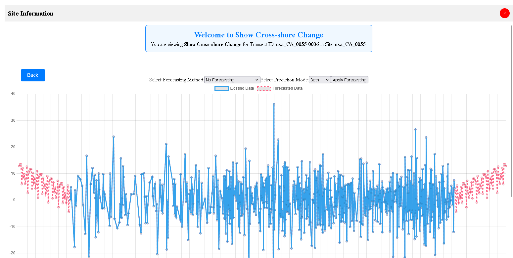Improve mobile interface of the latest prototype: https://erosion-ai.tavenel.fr/aipredictions/project/project.html
Implement new datapoints for France and United Kingdom with coastsat software
Find datas for UK Tide Gauge Network site map in https://www.bodc.ac.uk/data/hosted_data_systems/sea_level/uk_tide_gauge_network/processed/
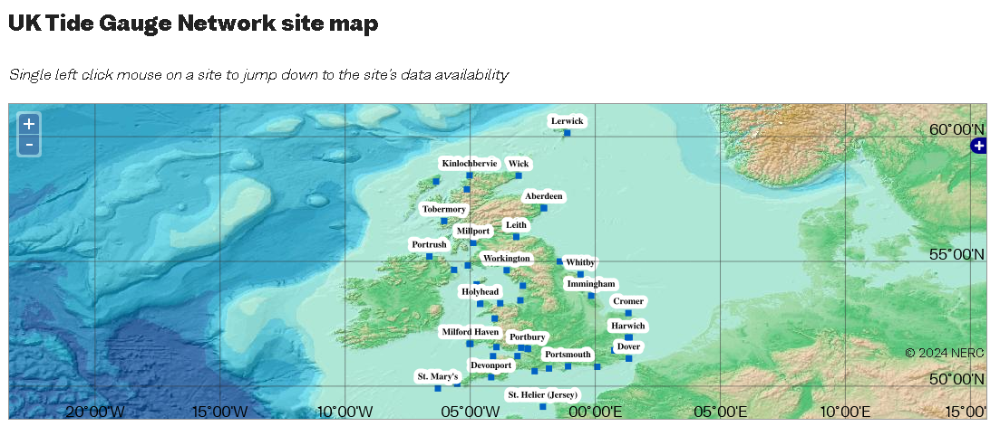Find an interesting post on Linkedin for coastal erosion
Implement new datapoints in United Kingdom
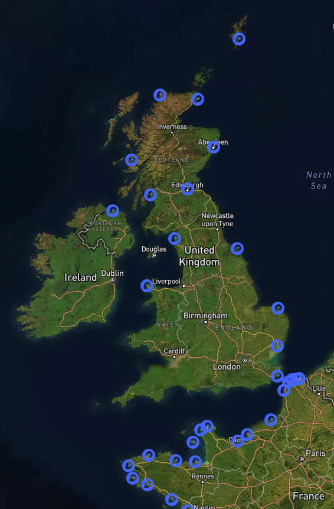Start to use CoastSeg (Fixes bugs)
Put my website code on Github
Put my script to extract datas for multiple location on github
Implement Mediteranean datapoints for France
Implement transects for new datapoints
Implement shoreline images all times for each sitename
How to obtain beach slope?
How to create a simulation for present shoreline, past shoreline and future shoreline
The last CEOC meeting of my internship
The last day of my internship as a visiting researcher
Compared filled method with reconstructured images to compare the difference
Predict and draw shoreline when clouds
Implement more realistic past and future trends
Grab all features from http://coastsat.wrl.unsw.edu.au/